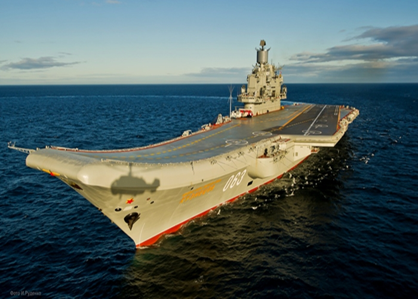

Адмирал Флота Советского Союза Кузнецов
Флагман ВМС России и Северного флота, единственный во флоте авианесущий корабль. Может
поражать большие цели противника, находящиеся над водой, осуществлять защиту морских боевых
соединений от нападений, в которых могут быть использованы авианосцы и подводные лодки.
Поддерживает десантные операции.
Содержание
Конструкция
- Длина: 306,45 м. (наибольшая)
- Ширина: 33,41 м. (по ватерлинии)
- Высота: 64,49 м.
- Осадка: 10,4 м.
- Водоизмещение стандартное: 46 540 тонн.
- Водоизмещение полное: 59 100 тонн.
- Скорость: 29 узла (54 км/час).
- Автономность плавания — 45 суток.
- Экипаж крейсера — 1980 человек, в том числе: 520 офицеров, 322 мичмана, 1138 матросов.
- Length: 306,45 m. (largest)
- Width: 33,41 m. (along the waterline)
- Height: 64,49 m.
- Draft: 10,4 m.
- Standard displacement: 46 540 tons.
- Full displacement: 59 100 tons.
- Speed: 29 knots (54 km/h).
- The autonomy of navigation is 45 days.
- The crew of the cruiser is 1980 people, including: 520 officers, 322 midshipmen, 1138 sailors.
История создания и назначения корабля
История создания ТАВКР «Адмирал Флота Советского Союза Кузнецов» связана с другими
кораблями, созданными по проекту 1143. Основные задачи авианосных кораблей СССР
существенно отличались от авианосных ордеров США:
Вертолёт Ка-27 универсален: с его помощью можно выполнять десантные операции, забрасывая 16 морских пехотинцев и оказывая им огневую поддержку с помощью блоков неуправляемых ракет С-5 или С-8. Это позволяло эффективно использовать корабль и в десантных операциях. В дальнейшем на базе Ка-27 был создан Ка-29 с десантной специализацией с поддержкой уничтожения бронетехники противника с помощью противотанкового ракетного комплекса (ПТРК) типа «Атака». Дальнейшим развитием этой концепции стал современный ударный Ка-52К с ПТРК «Гермес».
Однако узкая специализация кораблей проекта 1143 как вертолётоносцев не позволяла выполнять эффективное прикрытие своих АПЛ от противолодочных самолётов Lockheed P-3 Orion с их эскортом из истребителей НАТО: самолёты вертикального взлёта Як-38 не имели даже собственной радиолокационной станции (РЛС). Возможность Як-38 оперировать противокорабельными ракетами в зоне действия ПВО крупных судов представлялась малоэффективной. Поэтому потребовалось развитие проекта в сторону собственной полноценной истребительной авиации, способной вести атаки ракетами большой дальности и имеющей собственные развитые РЛС, МиГ-29К и Су-33.
Сценарии, разрабатываемые аналитиками ВМФ СССР, указывали, что наиболее вероятно в дуэли с авианосцами США быстрое выведение из строя палубной авиации, как своей, так и противника, из-за близких к авианосцам ядерных взрывов. Испытание в ходе операции «Перекрёсток» доказало, что парокапельная волна от ядерного взрыва обмывает палубу авианосца. На этом основании проект 1143 был рассчитан на устойчивость к 30-килотонному ядерному взрыву на расстоянии 2000 метров от корабля.
«Адмирал Кузнецов» может использоваться, в частности, как эффективное средство поддержки десантных операций.
- обеспечение безопасности атомных подводных ракетных крейсеров стратегического назначения в районах боевого патрулирования;
- противовоздушная оборона корабля и (или) группы кораблей, сопровождаемых им;
- поиск и уничтожение подводных лодок противника в составе противолодочной группы;
- обнаружение, наведение и уничтожение надводных сил противника;
- обеспечение высадки морского десанта.
Вертолёт Ка-27 универсален: с его помощью можно выполнять десантные операции, забрасывая 16 морских пехотинцев и оказывая им огневую поддержку с помощью блоков неуправляемых ракет С-5 или С-8. Это позволяло эффективно использовать корабль и в десантных операциях. В дальнейшем на базе Ка-27 был создан Ка-29 с десантной специализацией с поддержкой уничтожения бронетехники противника с помощью противотанкового ракетного комплекса (ПТРК) типа «Атака». Дальнейшим развитием этой концепции стал современный ударный Ка-52К с ПТРК «Гермес».
Однако узкая специализация кораблей проекта 1143 как вертолётоносцев не позволяла выполнять эффективное прикрытие своих АПЛ от противолодочных самолётов Lockheed P-3 Orion с их эскортом из истребителей НАТО: самолёты вертикального взлёта Як-38 не имели даже собственной радиолокационной станции (РЛС). Возможность Як-38 оперировать противокорабельными ракетами в зоне действия ПВО крупных судов представлялась малоэффективной. Поэтому потребовалось развитие проекта в сторону собственной полноценной истребительной авиации, способной вести атаки ракетами большой дальности и имеющей собственные развитые РЛС, МиГ-29К и Су-33.
Сценарии, разрабатываемые аналитиками ВМФ СССР, указывали, что наиболее вероятно в дуэли с авианосцами США быстрое выведение из строя палубной авиации, как своей, так и противника, из-за близких к авианосцам ядерных взрывов. Испытание в ходе операции «Перекрёсток» доказало, что парокапельная волна от ядерного взрыва обмывает палубу авианосца. На этом основании проект 1143 был рассчитан на устойчивость к 30-килотонному ядерному взрыву на расстоянии 2000 метров от корабля.
«Адмирал Кузнецов» может использоваться, в частности, как эффективное средство поддержки десантных операций.
The history of the creation of the TAVKR "Admiral of the Fleet of the Soviet Union
Kuznetsov" is connected with other ships created under the 1143 project. The main tasks
of the aircraft carriers of the USSR differed significantly from the aircraft carrier
orders of the USA:
The Ka-27 helicopter is versatile: it can be used to carry out amphibious operations, throwing 16 marines and providing them with fire support with the help of blocks of unguided C-5 or C-8 missiles. This made it possible to effectively use the ship in amphibious operations. Later, on the basis of the Ka-27, a Ka-29 with an amphibious specialization was created with support for the destruction of enemy armored vehicles using an anti-tank missile system (ATGM) of the "Attack" type. A further development of this concept was the modern Ka-52K strike with the Hermes ATGM.
However, the narrow specialization of the Project 1143 ships as helicopter carriers did not allow them to effectively cover their submarines from Lockheed P-3 Orion anti-submarine aircraft with their escort of NATO fighters: the Yak-38 vertical take-off aircraft did not even have their own radar station (radar). The ability of the Yak-38 to operate anti-ship missiles in the air defense zone of large vessels seemed ineffective. Therefore, it was necessary to develop the project towards its own full-fledged fighter aircraft capable of attacking with long-range missiles and having its own developed radars, MiG-29K and Su-33.
Scenarios developed by analysts of the USSR Navy indicated that the most likely in a duel with US aircraft carriers is the rapid incapacitation of carrier-based aircraft, both its own and the enemy, due to nuclear explosions close to aircraft carriers. The test during Operation Crossroads proved that the steam-drop wave from a nuclear explosion washes the deck of an aircraft carrier. On this basis, project 1143 was designed to be resistant to a 30-kiloton nuclear explosion at a distance of 2000 meters from the ship.
"Admiral Kuznetsov" can be used, in particular, as an effective means of supporting amphibious operations.
- ensuring the safety of strategic nuclear submarine missile cruisers in combat patrol areas;
- air defense of a ship and (or) a group of ships accompanied by it;
- search and destruction of enemy submarines as part of an anti-submarine group;
- detection, guidance and destruction of enemy surface forces;
- ensuring the landing of the amphibious assault.
The Ka-27 helicopter is versatile: it can be used to carry out amphibious operations, throwing 16 marines and providing them with fire support with the help of blocks of unguided C-5 or C-8 missiles. This made it possible to effectively use the ship in amphibious operations. Later, on the basis of the Ka-27, a Ka-29 with an amphibious specialization was created with support for the destruction of enemy armored vehicles using an anti-tank missile system (ATGM) of the "Attack" type. A further development of this concept was the modern Ka-52K strike with the Hermes ATGM.
However, the narrow specialization of the Project 1143 ships as helicopter carriers did not allow them to effectively cover their submarines from Lockheed P-3 Orion anti-submarine aircraft with their escort of NATO fighters: the Yak-38 vertical take-off aircraft did not even have their own radar station (radar). The ability of the Yak-38 to operate anti-ship missiles in the air defense zone of large vessels seemed ineffective. Therefore, it was necessary to develop the project towards its own full-fledged fighter aircraft capable of attacking with long-range missiles and having its own developed radars, MiG-29K and Su-33.
Scenarios developed by analysts of the USSR Navy indicated that the most likely in a duel with US aircraft carriers is the rapid incapacitation of carrier-based aircraft, both its own and the enemy, due to nuclear explosions close to aircraft carriers. The test during Operation Crossroads proved that the steam-drop wave from a nuclear explosion washes the deck of an aircraft carrier. On this basis, project 1143 was designed to be resistant to a 30-kiloton nuclear explosion at a distance of 2000 meters from the ship.
"Admiral Kuznetsov" can be used, in particular, as an effective means of supporting amphibious operations.